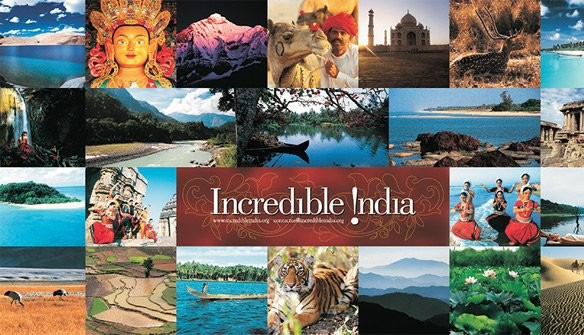
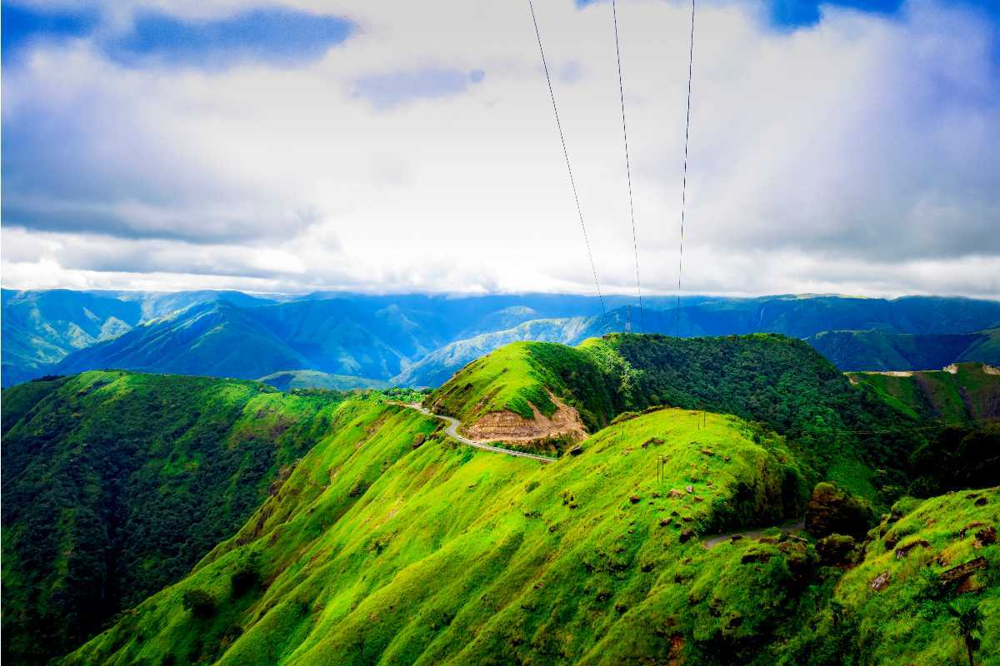

| Home | Domestic Tour | International Tour | About | Contact | |

| Domestic Tour |
| Place To Visit | Packages |
|  | Best Places To Visit In India ₹ 10,000 onwords
|
||||||
| Here are the top 10 tourist places in India |
 1 out of 10 Located on the banks of River Yamuna in Uttar Pradesh, Agra is a popular tourist destination Best Time: October to March
|  2 out of 10 Replete with turquoise blue water beaches and a bit of history, Andaman & Nicobar Islands is Best Time: October to June
| ||||||||||||
 3 out of 10 Darjeeling, the former summer capital of India under the British Raj, has evolved into one of Best Time:February to March, September to December
|  4 out of 10 ncredibly alluring, pleasantly boisterous and wreathed in clouds - Gangtok, the capital of Best Time: Throughout the year
| ||||||||||||
 5 out of 10 Situated at an altitude of 2730 m above sea level, Gulmarg is a popular skiing destination Best Time: October to June
|  6 out of 10 Popularly referred to as the "Paradise on Earth," Kashmir is a breathtaking region in Best Time: September - November; March - May
| ||||||||||||
 7 out of 10 Ladakh, located in the northernmost region of India, is a high-altitude desert renowned for Best Time:April - Mid-July
|  8 out of 10 With spectacular valleys, breathtaking views, snowcapped mountains, and lush forests of Best Time: Throughout the year
| ||||||||||||
 9 out of 10 Nestled amidst the pine-clad hills, Shillong, the capital of Meghalaya, unfolds like a Best Time:September to Mayy
|  10 out of 10 Famously known as 'Heaven on Earth, Srinagar is located in the union territory of Jammu & Best Time: pril to Octoberr
| ||||||||||||